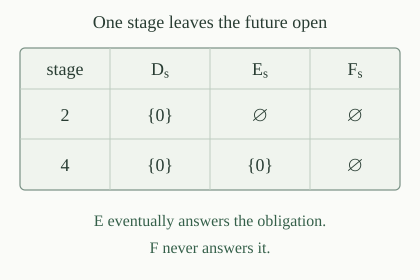

Use the fixed ordinary program numbering and write \(W_e=\operatorname{dom}(\varphi_e)\). The domain-inclusion index set and domain-equality index set are
The fixed pairing bijection represents a pair by one natural number. Every natural number has a unique decoded pair, so these are subsets of all of \(\mathbb N\), with no promise about well-formed inputs. The comparison ignores output values: a successful computation contributes its input to the domain, whatever value it returns.
Let \(W_{e,s}\) be the established uniform increasing finite stages, with \(W_e=\bigcup_s W_{e,s}\). Define the inclusion test
This relation is primitive recursive in all five numerical inputs. Stage membership has a primitive-recursive zero-one test, and the remaining operations are comparison and finite Boolean combinations. If \(x\) has appeared on the left at stage \(s\), a successful test must find it on the right. Otherwise \(t=s\) already succeeds. The test asks only a finite question at its supplied stages.
For every \(d,e\),
Consequently \(\mathrm{SUB}\in\Pi_2\).
Suppose inclusion holds, and fix \(x,s\). If \(x\notin W_{d,s}\), choose \(t=s\). Otherwise \(x\in W_d\subseteq W_e\), so some stage \(v\) contains \(x\) on the right. With \(t=\max(s,v)\), monotonicity retains that membership and gives \(R(d,e,x,s,t)\).
Conversely, suppose every displayed obligation has an answer. For \(x\in W_d\), choose a stage \(s\) with \(x\in W_{d,s}\). An answering \(t\) cannot use the nonmembership disjunct, so \(x\in W_{e,t}\subseteq W_e\). This proves inclusion.
For the hierarchy statement, decode \(d,e\) from the input code, and replace the two universal variables \(x,s\) by their pair code. The resulting matrix is primitive recursive and the prefix is \(\forall p\,\exists t\). The existing tuple-block normal form therefore puts this particular coded index set in \(\Pi_2\).
Consider illustrative increasing finite approximations \(D_s,E_s,F_s\): \(D_s=\{0\}\) for \(s\ge1\), \(E_s=\{0\}\) for \(s\ge4\), and each is empty at earlier stages; \(F_s=\varnothing\) at every stage. At stage two, both \(E_s\) and \(F_s\) omit an observed member of \(D_s\). Compute the three unions. Which of the two eventual inclusions holds?

The unions are \(D=E=\{0\}\) and \(F=\varnothing\). Hence \(D\subseteq E\), while \(D\not\subseteq F\). Both comparisons have the same observed membership facts at stage two. The difference is whether the missing value ever appears. This explains why the inclusion formula quantifies over a later answering stage instead of requiring the current stages to be included in one another.
Let \(C_0\) be the constant-zero program, and fix its numerical index \(u=\#C_0\). Then \(\varphi_u(x)=0\) for every \(x\), so \(W_u=\mathbb N\). Define the whole-domain comparison map
This particular map is primitive recursive: pairing is primitive recursive and its first argument is fixed. It produces a comparison code without running the program at \(e\).
For every \(e\), the specified map \(H\) satisfies
By construction \(W_u=\mathbb N\). Thus \(W_u\subseteq W_e\) holds exactly when \(W_e=\mathbb N\), since every domain is already a subset of \(\mathbb N\). That is precisely the definition of the totality index set. Also \(W_u=W_e\) is the very same condition. These equivalences prove both claims for this one map, including when \(W_e\) is empty or an infinite proper subset.
We have \(\mathrm{EQ}\in\Pi_2\). More explicitly, with the test \(R\) of ,
Equality is the conjunction of the two inclusions. If both hold, apply in each direction at the given \(x,s\), obtaining answering stages \(t_0,t_1\). Their maximum still answers both tests, since all stage memberships persist and both lower bounds on the stage persist. Thus a single existential stage suffices.
Conversely, each conjunct supplies the corresponding inclusion formula, so each domain is contained in the other. Equality follows. Pairing the universal variables again gives a computable-matrix \(\forall\exists\) description, and hence the asserted upper bound.
The index sets \(\mathrm{SUB}\) and \(\mathrm{EQ}\) are both \(\Pi_2\)-complete under ordinary computable many-one reductions. For every \(A\in\Pi_2\), one primitive-recursive map can reduce \(A\) to both of them.
The upper bounds were proved in and . By totality completeness, a fixed \(\Pi_2\) set \(A\) has a primitive-recursive reduction \(f_A\) to \(\mathrm{TOT}\). Use the specified composite
It is primitive recursive by composition. The reduction property of \(f_A\) and give \(x\in A\Longleftrightarrow F_A(x)\in\mathrm{SUB}\) and \(x\in A\Longleftrightarrow F_A(x)\in\mathrm{EQ}\). Every \(\Pi_2\) set therefore reduces to either target, proving both completeness statements.
The noninclusion index set and inequality index set are
Thus \(\langle d,e\rangle\in\mathrm{NSUB}\) means that some input belongs to \(W_d\) but not to \(W_e\). Inequality allows a witness in either direction. The order of the indices matters for noninclusion, even though it does not matter for inequality.
For every \(d,e\),
Consequently \(\mathrm{NSUB},\mathrm{NEQ}\in\Sigma_2\).
A witness to noninclusion is some \(x\in W_d\setminus W_e\). Choose a stage \(s\) witnessing its left membership. Its absence from the right domain means absence from every right stage, giving the displayed formula. Conversely, the formula gives left membership in the union and exclusion from the entire right union, so it witnesses noninclusion.
The matrix is primitive recursive, and pairing \(x,s\) gives an \(\exists\forall\) prefix. Alternatively, complement duality applied to each of the two \(\Pi_2\) upper bounds puts both complementary sets in \(\Sigma_2\). The universal demand in the displayed counterexample formula is essential: one currently missing value is not yet a permanent counterexample.
The sets \(\mathrm{NSUB}\) and \(\mathrm{NEQ}\) are \(\Sigma_2\)-complete. For every \(A\in\Sigma_2\), one primitive-recursive map reduces \(A\) to both.
The upper bounds are in . The complement \(\overline A\) of a \(\Sigma_2\) set is \(\Pi_2\). Apply to it, obtaining a primitive-recursive \(F\) with \(x\notin A\Longleftrightarrow F(x)\in\mathrm{SUB}\) and \(x\notin A\Longleftrightarrow F(x)\in\mathrm{EQ}\).
Negating both sides of each equivalence gives \(x\in A\Longleftrightarrow F(x)\in\mathrm{NSUB}\) and \(x\in A\Longleftrightarrow F(x)\in\mathrm{NEQ}\). The numerical map is unchanged. This complements both the source condition and the target condition; it does not reverse just one answer of a reduction.
We have \(\mathrm{SUB},\mathrm{EQ}\notin\Sigma_2\) and \(\mathrm{NSUB},\mathrm{NEQ}\notin\Pi_2\). In particular, none of these four sets is c.e., co-c.e., or decidable.
By properness of the hierarchy, choose a \(\Pi_2\) set outside \(\Sigma_2\). It reduces to either of the complete \(\Pi_2\) comparisons. If such a target were \(\Sigma_2\), computable-preimage closure would put the chosen source in \(\Sigma_2\), a contradiction. Dually, a \(\Sigma_2\) set outside \(\Pi_2\) reduces to each complementary comparison, proving its exclusion.
Every c.e. set is \(\Sigma_1\), and every co-c.e. set is \(\Pi_1\). The level inclusions put both first-level classes inside both second-level classes. A decidable set lies in both first-level classes. The exclusions therefore rule out all three possibilities for each comparison, giving more information than undecidability alone.
There are indices \(a,b\) with \(W_a=\{0\}\) and \(W_b=\{0,1\}\). For any such indices,
For \(a\), take a program which returns zero on input zero and otherwise searches forever for \(1=0\). For \(b\), return zero on inputs at most one, using the same divergent computation otherwise. Finite numerical tests and partial-recursive branches give programs for both procedures, so the fixed numbering supplies the required indices.
The set \(\{0\}\) is a proper subset of \(\{0,1\}\), since one belongs only to the latter. Thus the forward pair satisfies inclusion but not equality, while the reverse pair fails inclusion and also has unequal domains. All of these particular comparisons are elementary to settle, even though no uniform recognition procedure works for all program pairs.
Let \(u=\#C_0\) and \(v=\#C_1\) be indices of the constant-zero and constant-one programs. Decide whether \(\langle u,v\rangle\) and \(\langle v,u\rangle\) belong to \(\mathrm{SUB}\) and \(\mathrm{EQ}\). Do the two partial functions agree?
Both programs halt on every input, so both domains are \(\mathbb N\). Both ordered pairs therefore belong to \(\mathrm{SUB}\) and \(\mathrm{EQ}\). Nevertheless \(\varphi_u(0)=0\) and \(\varphi_v(0)=1\), so the functions differ. Equality of partial functions requires equality of outputs as well as domains. The earlier function-equality obstruction concerns that stronger relation; the completeness results here concern domains alone.